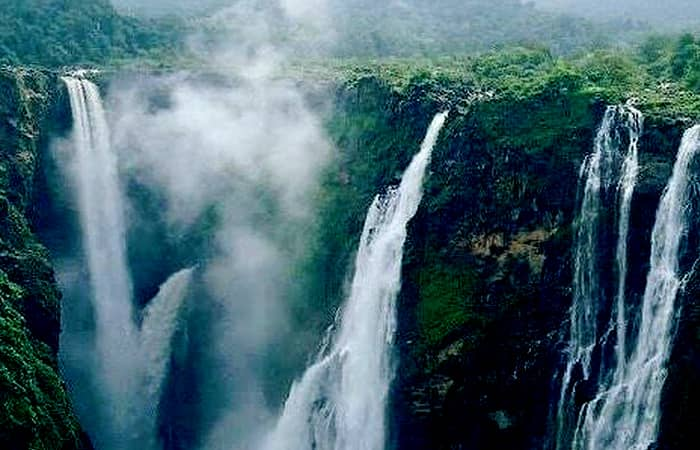
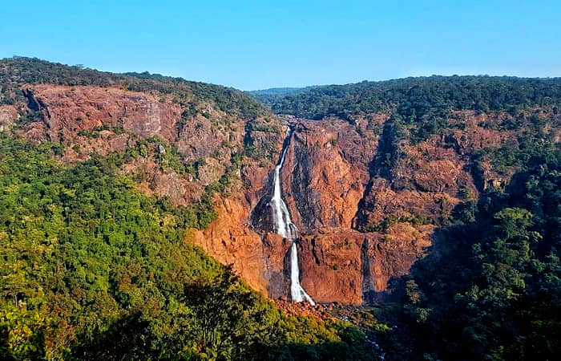
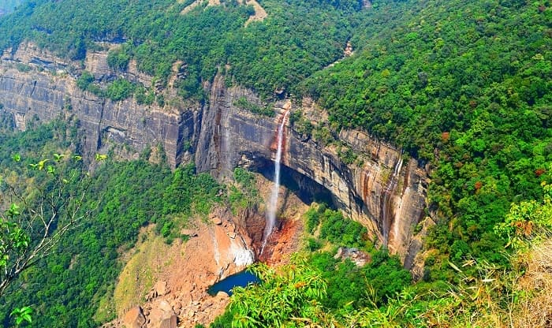
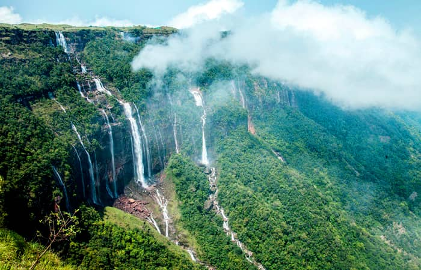
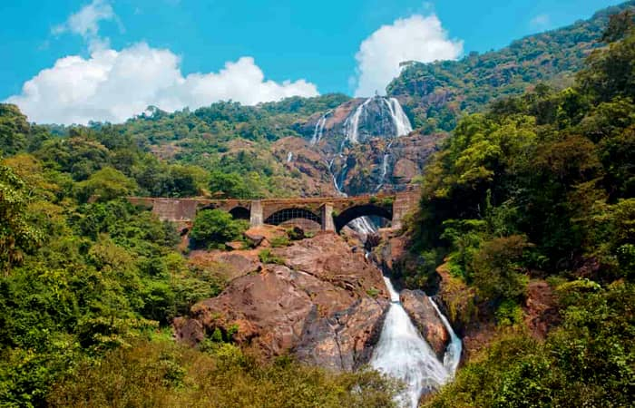
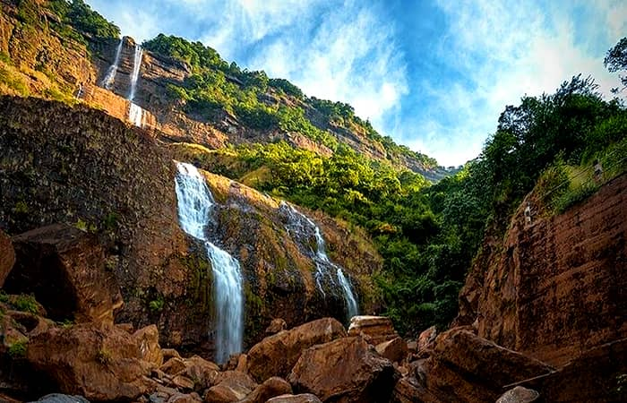
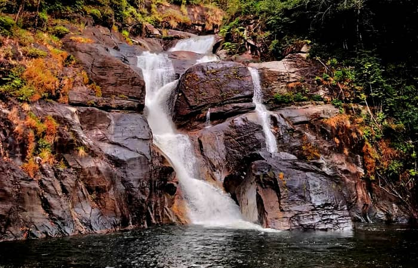
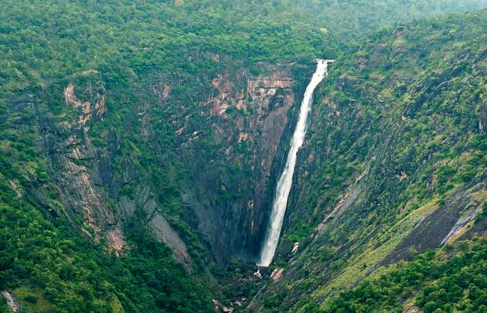
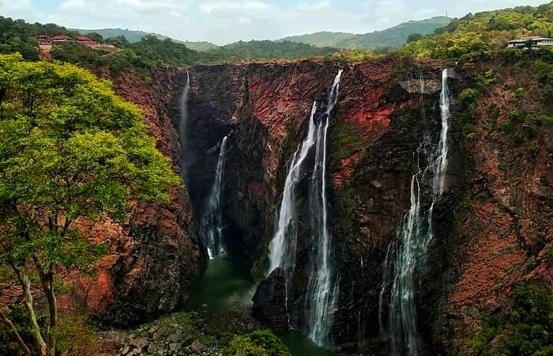
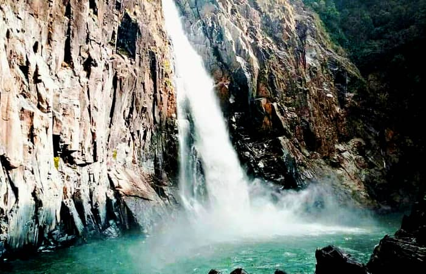

The diversified and admiring topography of the Indian subcontinent is one of the finest examples of nature’s craft. However, the country looks astonishing throughout the year yet monsoon adds uniqueness to the glory as this is the time when the rivers are on full swing, the valleys are bestowed with magnificent lakes, lush green meadows, thick dense forests, colorful meadows, mountains look super blooming as they seen to awake after a long sleep.
The entire country is adorned with cascading waterfalls occurring over bedrock fed by little contributing area. As per statistics, majority of the highest waterfalls in India are established in the mountain areas of North East India. The below-mentioned list comprised of the names of some very popular highest waterfalls in India that you should visit at least once in your lifetime.
List of 10 Highest Waterfalls of India
- Kunchikal Falls, Karnataka
- Barehipani Falls, Odisha
- Nohkalikai Falls, Meghalaya
- Nohsngithiang Falls, Meghalaya
- Dudhsagar Falls, Goa
- Kynrem Waterfalls, Meghalaya
- Meenmutty Falls, Kerala
- Thalaiyar Falls, Tamil Nadu
- Jog Falls, Karnataka
- Langshiang Falls, Meghalaya
01. Kunchikal Falls, Karnataka

Nestled in the Shimoga district of Karnataka in the Agumbe Valley, Kunchikal Falls is reckoned as the highest waterfall in India and holds 2nd position in Asia with a height of 1493 feet above the sea level. The valley where this beautiful waterfall is located is believed to receive heavy rainfall in the monsoon months. It happens to be the only permanent rain forest research station in the country and this makes it more popular.
This highest waterfall in Karnataka is believed to be fed or formed by Varahi River and the area is quite famous for reptiles, squirrels, rare reptiles, a variety of unique birds, and many more bizarre wild animals. The flow of water falling from the mountains has been reduced since the time the hydroelectric power station has set up closer to the fall.
There are many others small yet beautiful waterfalls established near Kunchikal Falls that make it one of the perfect sightseeing destinations in Karnataka.
How do I get there?
- By Flight: The nearest airport to the destination is Mangalore Airport that lies at a distance of almost 142 km. The drive from the airport to Kunchikal Falls is quite smooth as the airport provides great connectivity to the areas lying in Shimoga district.
- By Rail: Udupi is the nearest railway station established at a distance of 67 km from Agumbe. Shimoga Railway Station is the other closest railhead that lies almost 97 km away from the falls.
- By Roadways: Established almost 49 km away from Thirthahalli, Kunchikal Waterfalls is accessible from Hosanagar. On reaching Hosanagar drive towards Hulikal town that is located on state highway 52 and then from there take a left turn to reach your desired destination. You need to drive 5 extra km from the main road to reach Kunchikal Falls and you can also opt for the trekking trail.
Best Time to Visit
Earlier the intensity of water falling from the fall was very high but after the construction of Mani Dham, there has been a huge reduction in the speed of water flow. The most recommended time to plan your trip to Kunchikal Falls is between July and September i.e. during the monsoon months.
02. Barehipani Falls, Odisha

The second highest waterfall across India, Barehipani Waterfalls cuddles and flows over the magnificent Meghasani Mountain. This gorgeous waterfall shares land with the majestic Simlipal National Park established in the Mayurbhanj district. The region is pretty much popular for sheltering Indian bison (Gaurs), wild elephants, four-horned antelope (Chausingha), and Bengal tigers.
Thousands of travelers add Barehipani waterfalls in their bucket list of destinations especially if you are a nature lover then you must explore this wonderful site at least once in their lifetime. Tourists visiting here shall take out their time to explore the nearby destinations especially the gorgeous Joranda Falls, the 19th highest waterfall in India and is nestled inside the popular Simlipal National Park.
How do I get there?
Located almost 70 km from Baripada and 283 km from Bhubaneshwar, Barehipani Falls is the highest waterfall in Odisha.
- By Flight: Bhubaneswar Airport is the closest airport to reach the fall and from the airport, you don’t find any difficulty in getting transport to complete your further journey.
- By Rail: Baripada Railway Station is believed to be the nearest railway station to Baripada Waterfall (located at a distance of almost 70 km).
- By Road: Reach Baripada by taking any bus from Bhubaneshwar or other nearby cities and then from there hire a private taxi or book a cab to cover the further journey.
Best Time to Visit
However, the destination can be explored throughout the year yet the most preferred and recommended time to plan your trip to Barehipani Falls is between October to June. This is the time when the waterfall looks super admiring and the surroundings blossom with greenery and positivity all around.
Travel Tips
As the waterfall is established at the centre of the national park so you are highly advised to leave your hotel room early morning so that you can reach the site by noon. You are not going to find any hotel or food stalls near this waterfall, so don’t forget to carry your own food and water.
03. Nohkalikai Falls, Meghalaya

The 3rd highest waterfall in the country, Nohkalikai Waterfalls is established closer to Cherrapunji, one of the wettest places in the country. Cherrapunji is pretty much popular for lush green valleys, colorful meadows, orange orchids, and living bridges. Kynrem Falls and Nohsngithiang Falls are the other two-star attractions of Meghalaya that one must not skip on their trip to Meghalaya.
Kynrem Waterfall and Nohsngithiang Falls look very admiring and fascinating and are also enlisted among 10 highest waterfalls in India. The journey to the top of this astonishing waterfall is undoubtedly a lifetime experience hence, it is quite worthy to explore the site.
How do I get there?
Reaching here is not very challenging as the destination is accessible via all modes of transport.
- By Flight: Located at a distance of 166 km from the site, Borjhar Airport in Guwahati is the nearest airport from where a traveler can easily hire a taxi or can take a bus to reach the desired sight.
- By Rail: Guwahati Railway Station is the nearest railhead to this waterfall in Meghalaya which is located at a total distance of 99 km from Cherrapunjee.
Travel Tips
If this is your very first trip in the region then you are highly advised to hire a guide or join a group to reach the place as the route is quite confusing and there will be some moments when you feel like you have almost encountered a dead end.
Best Time to Visit
The most recommended and preferred time to plan your walk to this waterfall is between October and March when the intensity of water flow is moderate. Try avoiding monsoon months as it is not safe to explore Nohkalikai Falls due to increased water level.
Time Needed to Reach the Top
This completely depends upon the speed of an individual. Locals take very less time to cover the round-way tour. On an average, for a traveler it might take half day to cover the distance unless you start running to cover the distance.
04. Nohsngithiang Falls, Meghalaya

Renowned as one of the highest waterfalls in East Khasi Hills district of Meghalaya, Nohsngithiang Falls formed immediately after the confluence of the streams falling from a huge altitude of 1033 feet above the sea level. Popularly called as Mawsmai Falls, these wonderful waterfalls are divided beautifully and neatly in seven different parts.
Also popularized as Seven Sister Falls, Nohsngithiang Falls is a symbolic of the seven sister states of North East India- Assam, Arunachal Pradesh, Manipur, Nagaland, Tripura, Mizoram, and Meghalaya. The glory of this gorgeous waterfall is unmatched at the time of sunset when the rays of the sun falling on it creates a perennial rainbow.
How do I get there?
Cherrapunjee is nicely connected with Shillong by road and there are several public and private buses running between the cities on regular basis.
- By Air: Guwahati Airport is the closest airport located at a distance of 133 km from Cherrapunjee and almost 100 km from Shillong. There are regular flights landing and taking off from the airport to different major cities of the country.
- By Rail: The nearest railway station to Nohsngithiang Falls is at Guwahati and on reaching the railhead; the tourists can easily catch a bus or hire a cab for their onward journey.
- By Road: There are several buses running between Shillong and Cherrapunjee on regular intervals. On reaching the latter city take a small taxi ride to reach Mawsmai Village from where you just have to walk for 1 km to reach the destination.
Best Time to Visit
However, this tourist site in North East India is a huge crowd puller that attracts travelers throughout the year yet the most recommended and visited time to witness the beauty of the region is during the monsoon months. During monsoon, the real beauty of the nature and these falls can be witnessed and captured in your camera for your travel frames.
05. Dudhsagar Falls, Goa

Popularly called as “The Sea of Milk”, Dudhsagar Falls is very well renowned for its spectacular trajectory and is believed to be the 5th largest waterfalls in the country. Falling from an altitude of 1020 feet above the sea level, Dudhsagar Waterfalls happens to be inarguably one of the most attracting waterfalls in the country apart from its exotic beaches.
However, the falls look fascinating throughout the year yet during the monsoon months, the falls are transformed into one of the most powerful and alluring falls in the country. The glory of this fall can be understood with the fact that Dudhsagar Waterfalls are counted among top 100 falls in the world.
How do I get there?
Dudhsagar Waterfall is established at a distance of almost 71 km from Panaji, the capital city of Goa, and can be reached by following any of the transportation mode.
- By Flight: Located at a distance of almost 69.6 km, Goa International Airport is the nearest airport from where you can hire a taxi or book a cab to reach the waterfall.
- By Train: Sonalium Railway Station is the nearest railway station to Dudhsagar Waterfall and there are other two railway stations in the city that you can select for your train journey.
- By Road: If you are traveling by road then you need to reach Kulem first and then from there take a jeep to cover an hour-long distance.
Best Time to Visit
The most recommended time for your travel is monsoon months but if you are excited to witness the true beauty of Dudhsagar Falls then plan your trip after monsoon months.
Travel Tips
You are strictly advised to check the weather forecast before you start your journey in the monsoon months.
06. Kynrem Waterfalls, Meghalaya

Another astonishing waterfall in Cherrapunji, Kynrem Waterfalls are established in a park named as Thangkharang National Park. Established amidst the wonderful attractions offered by Meghalaya and its nearby surrounding areas, this three-tiered waterfall at Kynrem make for one of the most attractive and stunning destinations, therefore, be sure to visit this destination whenever you get an opportunity.
Kynrem Waterfalls happen to be enlisted among top 10 highest waterfalls in the country where travelers from every nooks and corners of the world come to witness the peaceful ambiance and scenic vistas of the entire valley.
How do I get there?
- By Flight: Umroi is the nearest domestic airport to Dudhsagar Waterfall and the closest international airport to the destination is Guwahati Airport where flights from different cities and country land on regular intervals.
- By Train: Guwahati Railway Station is the nearest railhead to the waterfall from where you can easily get a taxi or cab for your onward journey.
- By Road: Take a bus to Cherrapunjee and then from there opt for a taxi ride to reach the desired destination.
Best Time to Visit
Monsoon is the most recommended and preferred time to visit this waterfall as during months the witness the waterfalls flowing in its full strength and is brimming with water and life.
Travel Tips
Go for advance booking in the hotels as you might find it difficult to select a room during the peak season.
07. Meenmutty Falls, Kerala

The tallest waterfall in Kerala, Meenmutty Waterfalls happens to be one of the most gorgeous waterfalls in the country. Falling from a great height of almost 980 feet above the sea level, Meenmutty Waterfall is one of the most popular tourist destinations in South India. The gorgeous peak is quite famous for its wilderness and is enlisted among the largest and most spectacular waterfall in Wayanad.
How do I get there?
There are several buses running between the main entrance of the lake and Kalpetta at very regular intervals. You can also cover the trekking trail to reach this travel wonder which is however very challenging and tiring but the beauty of this serene waterfall makes it a worthy effort.
Best Time to Visit
Summers in the region is quite hot and humid so, the best time to plan your trip is between October and April when the weather is quite pleasing and favorable.
Travel Tips
Try avoiding monsoon months for your holiday as the waterfall is extremely dangerous in monsoon and have taken many lives. It would be quite convenient for you to cover the trekking route if you hire a guide as the trail is pretty confusing to the travelers.
08. Thalaiyar Falls, Tamil Nadu

Popularly called as Rat tail falls due to its shape, Thalaiyar Falls is nestled in Dindigul district of Tamil Nadu. This glimmering waterfall happens to be one of the highest waterfalls that falls from an altitude of 974 feet above the sea level. This widest waterfall is quite popular for its dark caves and dangerous place. The only thing that lets tourists to give a second thought on this is that the destination is pretty much difficult to be accessed via roadways.
Despite being adorned with impeccable and irresistible scenic vista, Thalaiyar Falls is largely unexplored due to its location but if you are an adventure enthusiast then you must travel to this place to enjoy trekking under the proper assistance of an experienced guide.
How do I get there?
- By Flight: Madurai International Airport is the nearest airport which is nicely connected to several major cities of India and a few foreign countries.
- By Train: Madurai Railway Station is the nearest railway station to reach Thalaiyar Falls. Getting road transport from the railhead is very easy.
- By Road: There are several buses running from Kodaikanal which is almost 34 km away from here.
Travel Tips
Keep your eyes open and beware of the animals as there are regular sightings of the animals in this forested area as it is a famous water source for them. You are also not advised to take bath in the river as the water is quite polluted.
09. Jog Falls, Karnataka

Separated into four different falls, Jog Falls is nestled beautifully in the Shimoga district of Karnataka. Visiting this place doesn’t limit your travel experience to waterfall beauty but also offers you a perfect opportunity to go for sightseeing tour as the location of the site is quite wonderful. However, there are many places in the region from where you can have a look at the entire valley but the view from “Viewpoint “is something that can never be expressed in words.
On your visit to Jog Falls, you don’t only see water falling from a huge height but can also feel the music or crescendo of a song.
How do I get there?
- By Flight: Mangalore International Airport is believed to be the nearest airport which is pretty well connected to several major cities of the country and even a few Middle Eastern countries too.
- By Train: Shimoga Railway Station is considered to be the nearest railway station from where regular trains are available to different cities.
- By Road: Jog Falls is nicely connected with both Bangalore and Mangalore through the well-networked national highways. From these two cities you can easily get a cab or can catch a bus to reach the waterfall.
Best Time to Visit
Except summer, you can plan your trip to Jog Falls in any of the months as during summer months, the climate is too hot and unfavorable to witness the beauty of the place. However, monsoon months is the most recommended time to plan your sightseeing trip as this is the time when the waterfall is in its full shade. Winter is also a great time to plan a picnic and enjoy time with your family and loved ones.
10. Langshiang Falls, Meghalaya

Presumed to be the third highest waterfall in the country, Langshiang Falls in Shillong is formed with the confluence of two streams of Kynshi River. Meghalaya, the abode of clouds is home to many waterfalls and Langshiang Falls happens to be one of the richest waterfalls in the city. Falling from a height of 1106 feet above the sea level, the waterfall is bestowed with green surroundings and is gaining popularity day by day.
With the presence of several towering hills, the destination serves a perfect platform to the adventure seekers to enjoy trekking and hiking.
How do I get there?
- By Flight: The closest international airport to the waterfall is at Guwahati and the nearest domestic airport is in Shillong.
- By Train: If you are coming by train then board a train to Guwahati Railway Station and then from there hire a taxi or book a cab to cover the onward journey.
- By Road: This star attraction in Meghalaya is easily accessible by road transports as the roads are well maintained and nicely connected to different cities.
Best Time to Visit
There is no specific season described to explore this site as the climatic condition is quite pleasing and favorable throughout the year. Those who are seeking to witness the lush green surroundings of the region shall plan their trip between July and last week of September i.e. during the monsoon months.
Travel Tips
You need to be little aware of the region if you are planning to cover the trekking trail as the route is quite confusing and you might get trapped in selecting the correct trekking route to reach the peaks.
The list of waterfalls in India doesn’t end here as the country is home to plethora of glimmering waterfalls and if you are excited to know about more such tourist sites then do follow us and do not forget to like and share the post with your known ones. Also, if you feel something irrelevant or missing here then do write it down in the comment box below and we would try to bring the necessary changes in our next posts.

 Call
Call WhatsApp
WhatsApp Enquiry
Enquiry